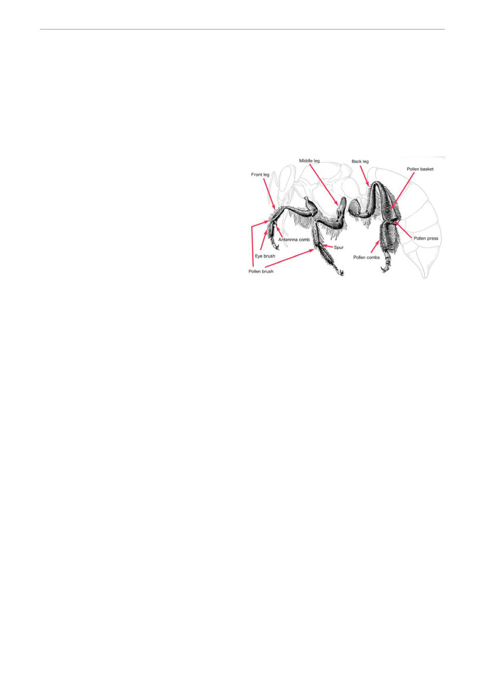

Honeybee legs. Most of these features can be
seen with a hand lens. Based in an original
drawing by Woodruff, 1938.
This month's bit of bee biology . .
The bees knees – magic legs
(Article 28 by Bruce Ward)
Honey bee legs are a marvel of multi-functional design. They built for a wide range specific tasks
that help the bee survive and work within the colony. In addition to allowing the bee to walk, the
legs have senses of feel and taste and special tools for cleaning the bee and manipulating its
environment.
Each bee has six legs, with one pair attached to
each segment of the thorax. I will keep it simple
and call them the front, middle and back legs,
but they have several more scientific names.
Like the body of the bee, the legs are made up
of segments. Each leg is like a Swiss Army knife
with different tools and functions. The legs each
have very different functions and the tools on
one leg complement different tools on other
legs and oten work with other body parts as
well.
The front legs serve for cleaning and sensory
work. Each front leg has a special notch lined
with stiff hairs combined with a tiny spur. This is
the antenna comb. Bees pull their antennae
through this structure to remove dust and pollen. Chemical receptors around the antennae comb
magnify and add to what the receptors on the antennae have already detected, giving the bee even
more information. These legs also have taste receptors on the feet to test substances. This is useful
for identifying food and sensing things such as the footprint pheromones. The front legs have
brushes to clean the eyes and other brushes to move pollen from the bee’s body towards the rear
legs. They also contain glands that produce cleaning substances and possibly pheromones.
The front legs are essential to the survival of the bee, and it will not survive for long after losing a
front leg.
The middle legs are less specialised than the front or back legs and not as essential to the bee’s
survival. A bee can lose a middle leg and continue to function within the hive. The middle legs
support movement and in particular allow the bee to stand firmly while using the front legs for other
tasks. This is most obvious when the bee is in the defence stance with the front legs – and their
chemical sensors – pointing towards the danger. The middle legs also help with grooming and
manipulating things. They are covered with hairs and spines to assist in cleaning pollen off the bee’s
body. If you look very closely with magnification you can see a sharp spur on the back of the middle
leg. This is used like a crow bar to lever the pellet of pollen off the back leg when a pollen forager
returns from a successful pollen foraging trip. It is also used to remove flakes of wax from the wax
glands when building new combs. Queens don’t have these spurs.